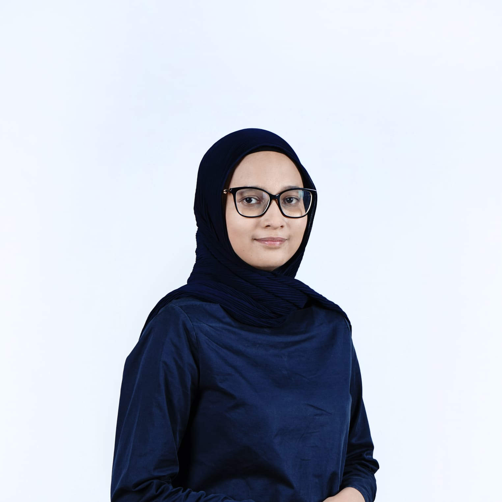
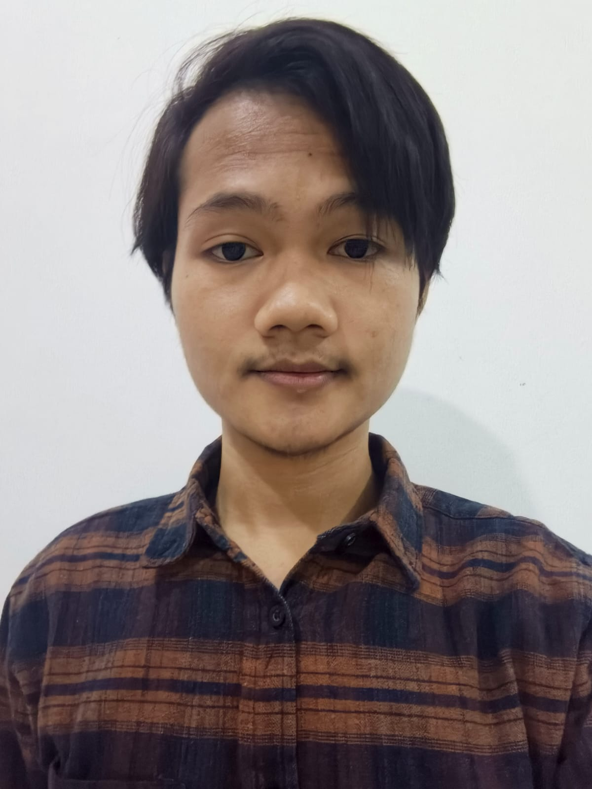
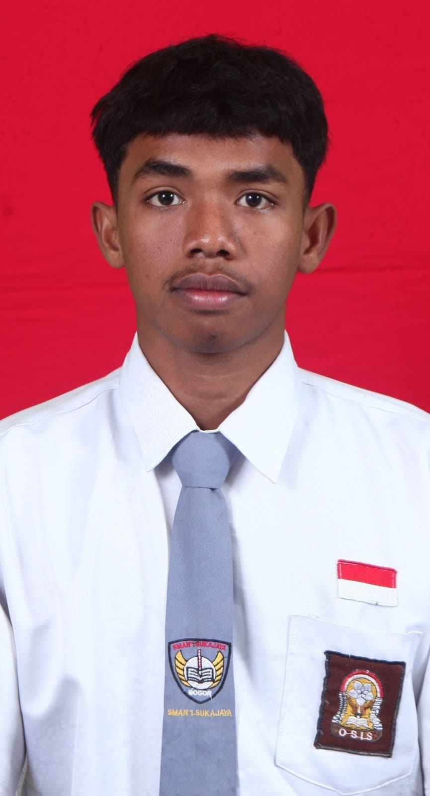

Visi
Menjadi platform terdepan yang membantu perusahaan meningkatkan produktivitas tim tanpa mengorbankan kesejahteraan mental karyawannya.
Buat tim remote & hybrid
Check-in harian, agenda tim, dan catatan work life balance kumpul di satu tempat. Datanya bisa langsung dipakai HR buat membaca kondisi tim.
Tentang Kami
NeuroSync lahir dari keresahan banyak pekerja yang kesulitan menjaga produktivitas tanpa mengorbankan kesehatan mentalnya. Kebanyakan aplikasi produktivitas yang ada hanya fokus pada pelacakan tugas, tanpa memperhatikan keseimbangan hidup penggunanya.
Makanya di NeuroSync, catatan kerja dan catatan kondisi diri ada di satu tempat. Perusahaan tetap bisa lihat ritme kerja timnya, tapi karyawan juga bisa lihat punyanya sendiri. Hari ini sebenarnya kerja berapa jam? Sempat istirahat atau tidak?
Susah dipantau dari jauh, tapi juga nggak mau kerasa diawasi terus.
Butuh data beneran soal beban kerja tim, bukan cuma feeling, sebelum bikin kebijakan.
Proyek banyak, orang sedikit, dan lembur pelan-pelan jadi kebiasaan tanpa ada yang sadar.
Arah Kami
Menjadi platform terdepan yang membantu perusahaan meningkatkan produktivitas tim tanpa mengorbankan kesejahteraan mental karyawannya.
Produk & Fitur
Mulai dari menjaga konsistensi kerja harian sampai memantau kondisi mental tim.
Setiap hari, karyawan cukup satu kali klik check-in untuk menandai bahwa mereka sudah memulai aktivitas kerja. Fitur ini terinspirasi dari mekanisme streak pada aplikasi belajar bahasa atau kebugaran, di mana pengguna termotivasi menjaga rangkaian hari aktifnya tidak putus.
Cocok untuk Tim remote atau hybrid yang kehadiran aktifnya sulit dipantau langsung oleh atasan.
Papan pengumuman digital bagi perusahaan atau ketua tim untuk membagikan agenda penting ke seluruh anggota: jadwal sprint review, tenggat pengumpulan pekerjaan, rapat mingguan, sampai sesi pelatihan internal.
Cocok untuk Perusahaan dengan banyak proyek berjalan yang butuh koordinasi jadwal antar divisi.
Berbeda dari aplikasi produktivitas pada umumnya, NeuroSync ikut memperhatikan kondisi mental penggunanya. Setiap hari pengguna dapat mencatat suasana hatinya dan mengisi alokasi jam aktivitas harian (kerja, istirahat, hiburan) yang lalu dibandingkan dengan standar jam ideal.
Cocok untuk Perusahaan yang ingin membangun budaya kerja sehat dan berkelanjutan, bukan cuma berorientasi hasil.
Seluruh catatan mood dan keseimbangan waktu yang diisi setiap hari terekam dan bisa dilihat kembali sebagai rangkuman berkala, mulai dari satu minggu, satu bulan, hingga dua bulan terakhir.
Cocok untuk Divisi HR atau manajemen yang butuh data pendukung saat menyusun kebijakan kesejahteraan karyawan.
Pertanyaan Umum
Dua-duanya bisa jalan bareng. Aplikasi tugas ngurus siapa ngerjain apa, NeuroSync ngurus ritmenya: seberapa konsisten tim masuk, jam kerjanya seimbang atau enggak, dan kondisinya gimana dari minggu ke minggu. Hal-hal begini biasanya nggak kelihatan di aplikasi tugas.
Nggak per orang. Atasan dan HR cuma lihat rangkuman satu tim, itu pun baru muncul kalau anggotanya minimal lima orang, biar nggak ketebak siapa yang ngisi apa. Catatan hariannya tetap milik karyawan sendiri.
Gratis buat tim sampai 10 orang, sudah termasuk check-in, streak, dan papan agenda. Kalau mau laporan berkala dan rangkuman HR, paket berbayarnya mulai Rp25.000 per karyawan per bulan.
Nggak. Satu hari kerja juga sudah jalan, dan nggak ada yang perlu diinstal di komputer kantor. Tinggal undang anggota lewat email, habis itu mereka bisa langsung check-in dari browser atau HP. Minggu pertama kami temani buat nyiapin agenda dan struktur timnya.
Tim Founder
Dari riset pengguna sampai baris kode terakhir.

Project Manager & Co-Founder
Menjaga timeline tim tetap waras dan memastikan tiap keputusan balik lagi ke kebutuhan pengguna.
Chief Technology Officer (CTO)
Nyusun struktur halaman dan nulis kode inti platform, dari semantic HTML sampai kecepatan loading.

Lead Front-End Developer
Merumuskan konsep produk NeuroSync dan nulis spesifikasi keempat fiturnya, sekaligus nyusun layout grid halaman.

UI Assistant & Quality Assurance (QA)
Menyusun design system NeuroSync dan menguji tiap alur sebelum sampai ke tangan pengguna.